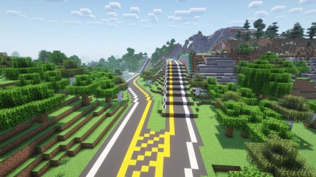
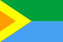

Where Builders Unite
UniTerra is a creative country-building and city-building Minecraft server where people can create countries and cities. You can check out the server using the following server IP: 142.4.216.95, or you can use an alternate mirror ip, uniterra.junimeek.net
Visit the official UniTerra website here.
I specialize in the construction of highway infrastructure and mass transit planning. Additionally, I am the mayor of Glacia Town, a small town in the country of Apetria.
Below is the list of major builds that I have created in UniTerra. Currently, I have two major completed builds, both in Apetria: Apetria Highway 6, and Heimo International Airport.
| Country | Build | Description | Image | |
|---|---|---|---|---|
| Apetria | Apetria Highway 6 | A highway that connects Heimo to Heimo International Airport and Glacia Town |  | |
| Apetria | Heimo International Airport | One of the largest airports in the server. Singlehandedly built by me, it current only has one passenger terminal (Terminal A) with 41 gates that accomodate small aircraft. | ||
| Leedonia | Regal University | Currently in the planning stage. A university in Nouvarcha, Leedonia that will be built in collaberation with KingCrafterino. | ||
Along with being the mayor of Glacia Town, I own a few companies.
| Base Country | Company | Description | Locations | |
|---|---|---|---|---|
| Apetria | BorderStop | A chain of supermarkets with locations near border crossings | 1 | |
| Apetria | Natasha's Italian Resturant | A chain of resturants that aims to sell high quality Italian food | 1 | |
| Leedonia | Juniper International Construction Agency | A multinational agency that can be contracted to build anything in a variety of countries. Specializes in infrastructure. | 2 | |
|  | Leedonia | Nalayamë | Transportation manufacturing company based in Idalia | 0 |
Everything below is mainly information that I use for my own purposes, but I figured it'd be fun to leave it all visible here.
| Building | Beds | Master Beds |
Omitted Beds |
Pop. |
|---|---|---|---|---|
| GHS Supplemental Housing | 16 | 4 | 8 | 16,000 |
| Madoka Apartments | 4 | 13 | 30,000 | |
| House on a hill | 1 | 2,000 | ||
| 101 2nd Ave | 1 | 2,000 | ||
| 151 Old 1st St | 1 | 1,000 | ||
| 152 Old 1st St | 2 | 2,000 | ||
| 153 Old 1st St | 1 | 1,000 |